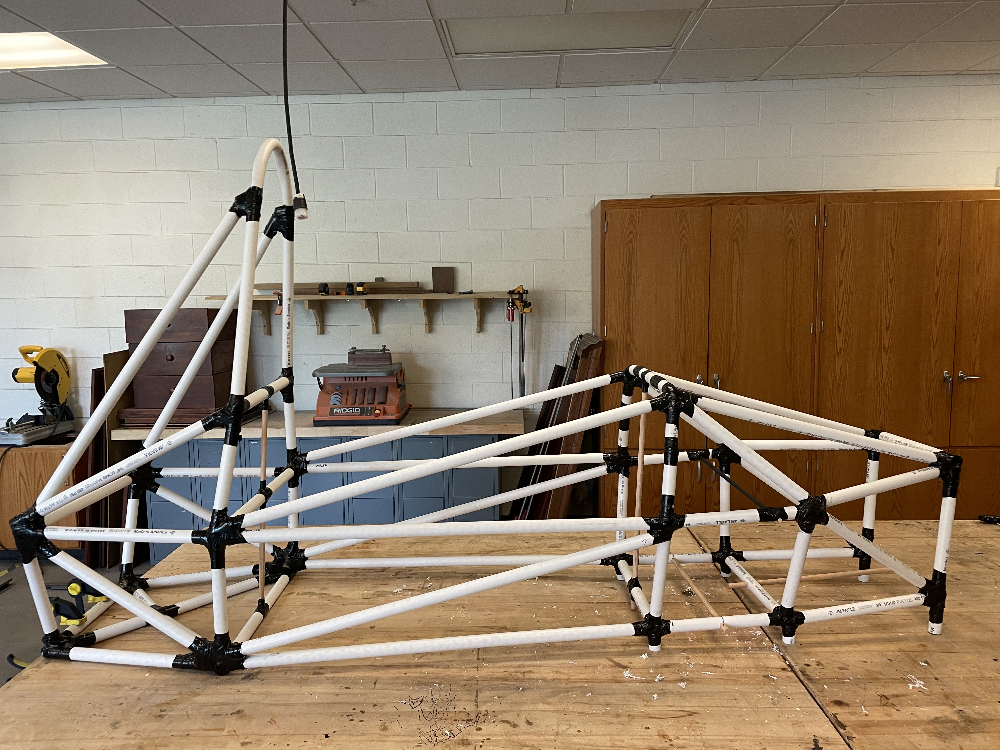
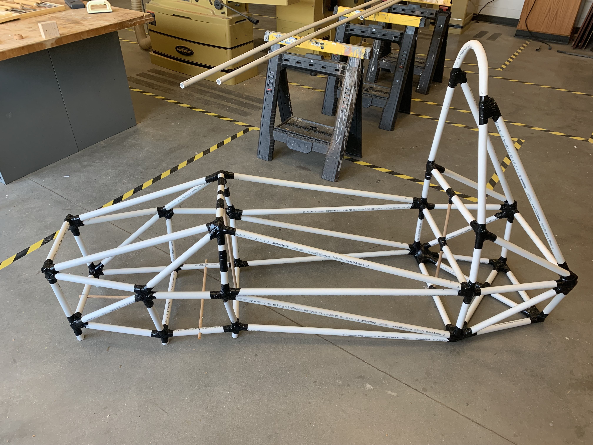
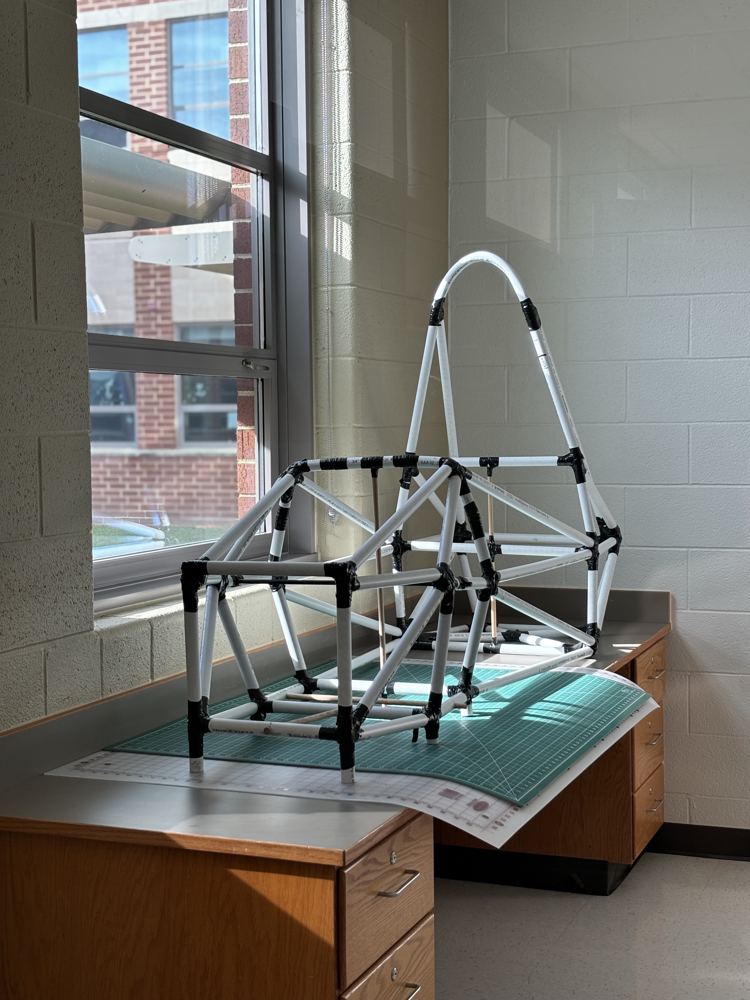

Structures · Formula SAE · Stage 1
PVC Chassis
Version 1
Overview
Before cutting a single piece of steel, the first step in the Phoenix Motorsports chassis program was building a full-scale physical mockup out of PVC pipe. Version 1 was the first time the CAD geometry existed as a real, three-dimensional object — allowing the team to catch problems that are invisible on a screen and validate that the overall proportions and space worked as intended.
Objectives
- Validate the CAD chassis geometry at full scale before committing to steel, eliminating costly material waste from fabrication errors.
- Physically check driver ergonomics, cockpit clearances, and roll hoop height against a real human body in the mockup.
- Identify fitment problems and geometry issues early in the design process while changes are still cheap.
My Contributions
- Designed the assembly approach — selecting PVC pipe sizing and connector types to replicate the tube OD of the steel members in the CAD model.
- Translated the Inventor model into a cut list and physically built the full V1 mockup.
- Conducted the geometry review and documented every issue found for incorporation into V2.
Methods / Approach
Each member in the CAD model was mapped to a corresponding PVC pipe cut. Connectors were used at joints to replicate node geometry. The mockup was assembled without adhesive so members could be swapped or re-cut quickly as issues were found. Key checkpoints included verifying roll hoop clearance, front bulkhead geometry, and overall frame length and width against the FSAE dimensional rules.
Results



- Completed full-scale PVC mockup representing the initial CAD design.
- Confirmed overall frame envelope and roll hoop geometry.
- Identified several joint geometry issues and member routing conflicts to address in V2.
Challenges and How I Solved Them
Connector rigidity. PVC connectors are not rigid — the mockup had play at every joint, making it hard to assess true geometry. I addressed this by checking critical dimensions with a tape measure and square against the CAD model rather than relying on visual inspection alone.
Translating CAD angles to cuts. Several members met at compound angles that were not easy to replicate cleanly in PVC. I simplified these joints for the mockup while flagging them as areas requiring careful attention during steel fabrication.
What I Learned
- Physical mockups reveal things CAD cannot — proportions that look fine on screen can feel wrong at full scale, and ergonomic issues are impossible to catch without a real object.
- The cost of a PVC mockup is negligible compared to scrapping and re-cutting steel tube; front-loading validation is always worth it.
- Documenting every issue found in V1 systematically made V2 significantly faster to build and more refined on the first assembly.
Tools and Technologies
- Autodesk Inventor — source CAD for geometry reference
- PVC pipe and connectors — full-scale physical prototype
- Tape measure, framing square — dimensional verification